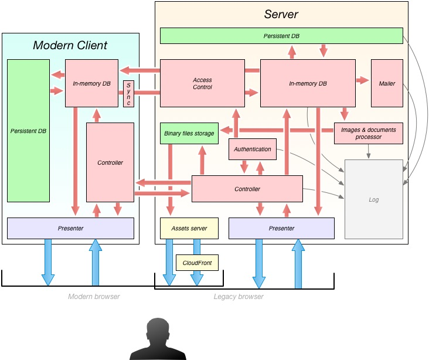

To be updated
eRegistrations Application Architecture
eRegistrations is full-stack JavaScript project, that means both client and server side logic is programmed in JavaScript.
Below you can find diagram presenting bird’s eye view of multilayerd architecture and bindings between all main components

Application server-side process runs on Node.js platform. It can be multiplied and load balanced among many different machines.
### Data tier
Server
Persistent DB
Persistently we save data in very low-level state, exactly just key: value pairs. Any database engine (SQL and NoSQL) could be adapted to be used as physical storage.
For relational level handling of data like: joins, configuration of filters and other compositions, we use in-memory DBJS engine. It allows us to compose and work with data in same language as we program application, it provides all means of access, that normally SQL databases provide, and it goes far beyond that.
Above setup with well thought configuration assures us with great scalability, we can easily load-balance traffic and data handling to many different servers, and maintenance is much easier as we use one programming language across all application runtimes.
Binary files storage
Dedicated folder within filesystem, can be hosted on different disk or different server.
Client (Modern Browser)
Persistent DB
localStorage, simple key-value storage.
Application tier
Server
Brain of application logic is DBJS (in-memory, highly evented, database engine implemented in JavaScript). It imports what’s needed from persistent layer and exposes natural for language data access interfaces.
Authentication logic (backed with bcrypt algorithm) is implemented within mano-auth package. Results of authentication are decisive for Access Control module which propagates database data via Server Sent-Events channel to modern clients.
All client submissions (data updates, authentication), both coming from modern and legacy browsers are validated and processed in Controller layer.
Based on events that happen in database layer, configured email notifications are propagated with help of Nodemailer module. Same way needed Images and documents processing is triggered.
All internal events that are important to track source of eventual issues are saved in dedicated log layer.
Client (Modern Browser)
Same as on server-side main component of application logic is DBJS engine, it processes data applicable only for given client (which is securely chosen by Access Control module on server-side). All updates made in client-side process are propagated back to server. Additional Sync layer assures that updates eventually reach the server-side when they couldn’t be delivered at time they happened.
All user submissions are validated and processed within Controller layer and result either in direct database updates or are propagated for further processing to server-side.
Presentation tier
Server
Generation of HTML documents via Presenter layer that is done on server, is configured only to provide fallback support to legacy engines and to generate PDF documents. It’s run with same presenter engine that is used directly within modern clients to create single page application experience.
Furthermore HTTP Assets server serves all application static files. It can be additionally configured with Amazon CloudFront (or similar) service to reduce latency and assure fast website access across the world.
Client (Modern Browser)
Presenter layer assures routing for both GET and POST requests, builds requested views and assures fast single page application experience.